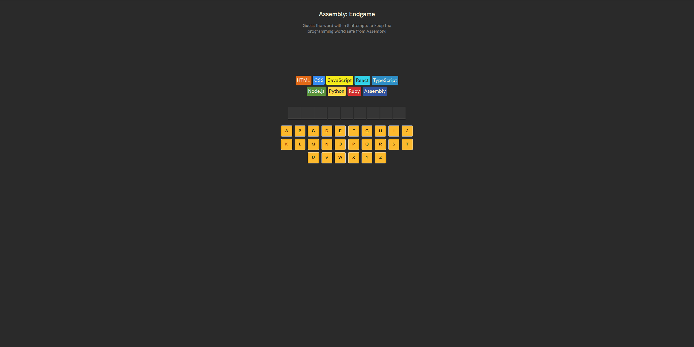
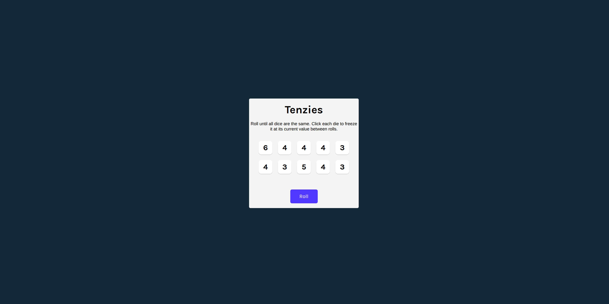

Assembly

Tech stack: React, TypeScript
A hangman-inspired guessing game where each incorrect attempt deprecates a language from your tech stack until none remain.
I specialize in modernizing legacy frontend systems and building production-grade web applications across React, Angular, and Vue. Over five years I have migrated AngularJS applications to React, rebuilt high-traffic e-commerce platforms from Ruby on Rails to Vue, delivered enterprise component libraries adopted across multiple product teams, and optimized full-stack data pipelines to solve real performance problems in production.
My background spans fintech, e-commerce, and enterprise tooling. I work across the full stack from component architecture and design systems to backend API development and database optimization. I care about code that is maintainable, accessible, and built to last.
I do my best work on teams where seniors are involved, code reviews are real, and the work actually ships.

Tech stack: React, TypeScript
A hangman-inspired guessing game where each incorrect attempt deprecates a language from your tech stack until none remain.

Tech stack: React, TypeScript
An AI cooking assistant that generates recipes based on the ingredients you provide, using an LLM for realistic and usable results.

Tech stack: React, TypeScript
A casual dice game where you roll until all dice show the same number.